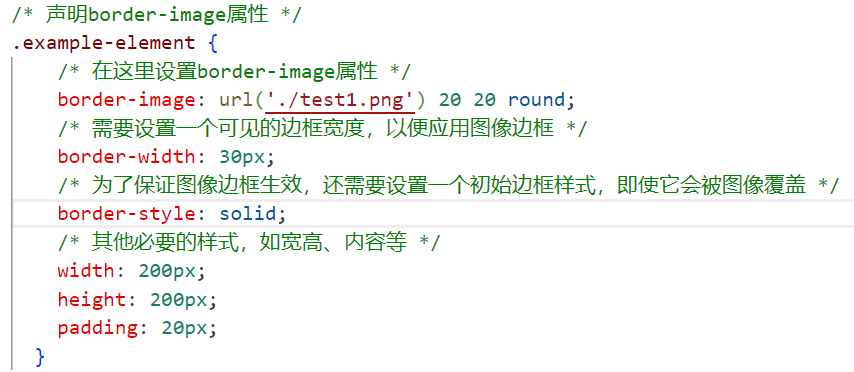
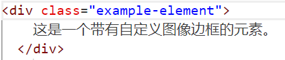

1.
background-image:
- 用于设置元素的背景图像。
background-image: url('image.jpg');
2.
border-image:
- 用于创建复杂样式边框，通过指定图像并控制如何将其切割和重复填充到元素的边框区域。
-
border-image: url('border.png') 30 30 round;
假设你有一个图像文件border.png，它设计成可以被分割为九个部分，用于创建元素的边框样式。以下是详细的步骤和解释：
/* 声明border-image属性 */
.example-element {
border-image: url('border.png') 30 30 round;
}
在这个例子中：
url('border.png') 指定了用来作为边框图像的资源地址。
30 30 表示的是border-image-slice值，它定义了如何从图像中裁剪出边框图像的各个部分。这里两个30代表了上右下左四个边的裁剪宽度，如果只有一个数值，那么四个边会采用相同的裁剪宽度；如果有两个数值，第一个值对应上和下边，第二个值对应右边和左边；如果有四个值，则分别对应上、右、下、左边。
round 参数是border-image-repeat的简写形式，它指示当图像不能完美地填充到边框的所有部分时，应该如何处理图像边缘。round意味着如果需要拉伸或者收缩图像来适应边框尺寸，那么会尽量保持图像的比例，并对图像进行圆整（比如，可能增加或减少一个小像素点），使得图像能够尽可能无缝地填充边框。
完整的语法通常包括所有六个子属性，如下所示：
.example-element {
border-image:
url('border.png') /* border-image-source */
30 30 /* border-image-slice */
round /* border-image-repeat */
fill /* border-image-width （默认是auto，这里fill表示让图像填满边框宽度，也可以设置具体像素值） */
stretch /* border-image-outset （一般默认是0，表示图像不超出边框之外，stretch在此处意义不大，因为前面用了round） */;
}
举个实际的例子，假设border.png是一张设计好的9-slice图像（即中心部分可拉伸，边缘不可拉伸的部分包含边框的实际样式），那么当你应用以上样式时，浏览器就会根据给定的参数，巧妙地将这张图像应用到元素的边框上，形成一个带有复杂样式的自定义边框。


这是一个带有自定义图像边框的元素。
3.
content (配合伪元素):
- 可以在某些伪元素（如`:before`和`:after`）中插入图像作为内容的一部分。
content: url('icon.png');
4.
cursor:
- 设置鼠标指针悬停在元素上时所显示的光标图像。
cursor: url('pointer.cur'), auto;
5.
list-style-image:
- 用于设置有序列表（`ol`）或无序列表（`ul`）项目标记为一个图像。
list-style-image: url('bullet.png');
此外，还有一些高级的CSS图像功能:
6.
image()、image-set():
- `image()` 是一个提议的功能，旨在引入更复杂的图像源和切换逻辑。
- `image-set()` 用于指定不同分辨率下的图像资源，帮助浏览器根据设备条件选择最佳图像。
-
cross-fade():
- 用于制作图像的淡入淡出过渡效果，常与`background-image`结合使用，实现平滑的图像融合。
-
mask-image:
- 定义一个图像作为遮罩层，决定元素的透明区域。
-
element():
- 作为一个CSS函数，它可以引用文档中的另一个元素作为背景图像或其他图像相关属性的来源。
-
image-rendering:
- 控制浏览器如何优化或渲染图像，特别是在缩放时，以改善图像质量或性能。尽管它不是直接操作图像本身，但在图像展示方面具有重要影响。